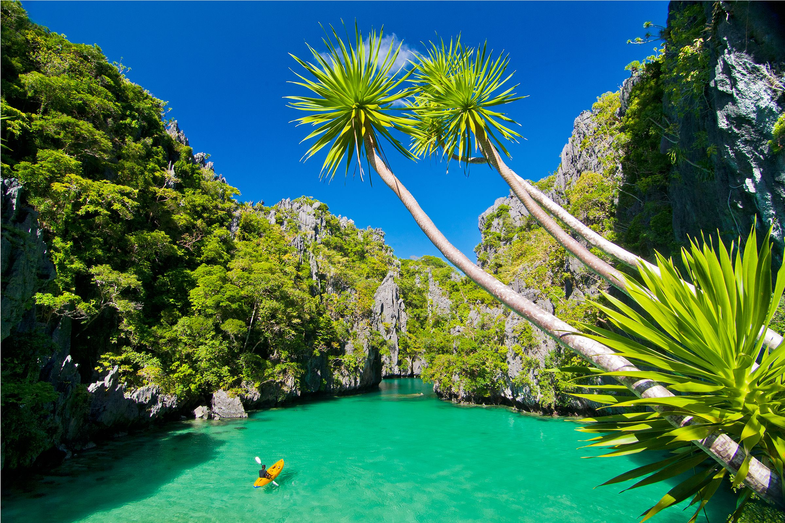

PALAWAN
Puerto Princesa, Palawan
Palawan is known for its beautiful beaches,
clear blue water, limestone cliffs, and rich
nature. I recommend Palawan because it is
relaxing, beautiful, and perfect for exploring
nature. It also gives visitors a chance to
experience the natural beauty and culture of
the Philippines.

View Details
INTRAMUROS
Manila, Philippines
I recommend Intramuros because it is a historic
place with beautiful old buildings, churches,
and stone walls. It is a good place to learn
about Philippine history, take pictures, and
explore with family or friends.
 View Details
View Details
MANILA OCEAN PARK
Manila, Philippines
I recommend Manila Ocean Park because it is a
fun and beautiful place with many things to see
and do. It is a great place for families and
friends to spend time together, see different
marine animals, and enjoy fun activities.
 View Details
View Details